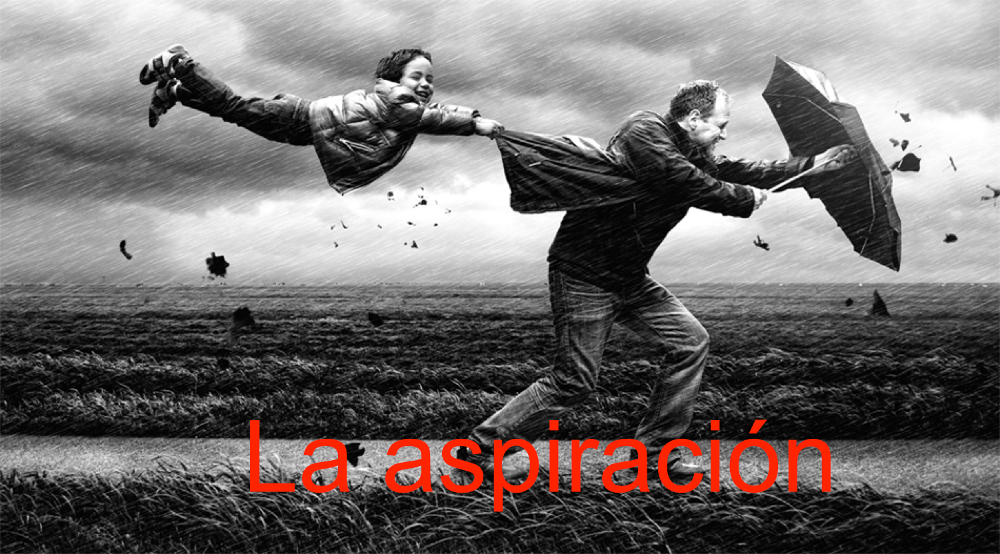
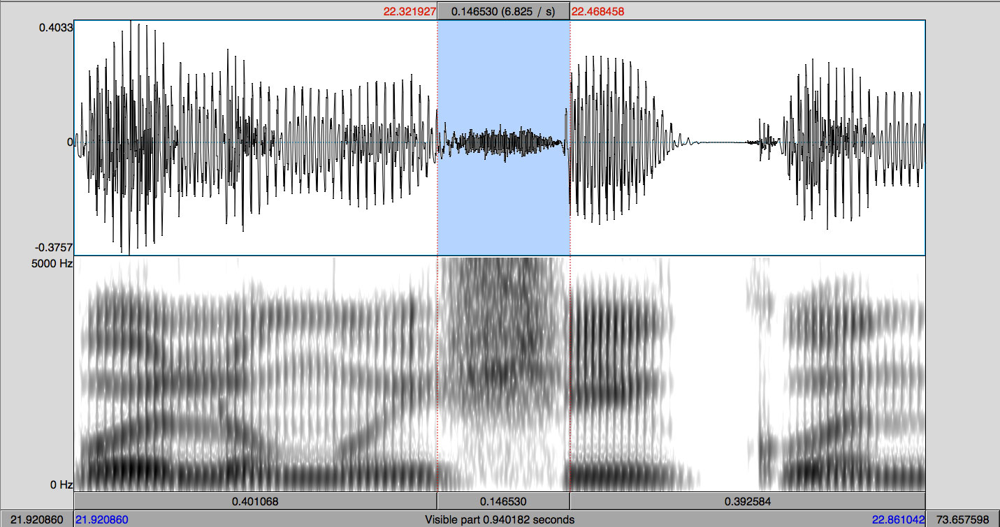
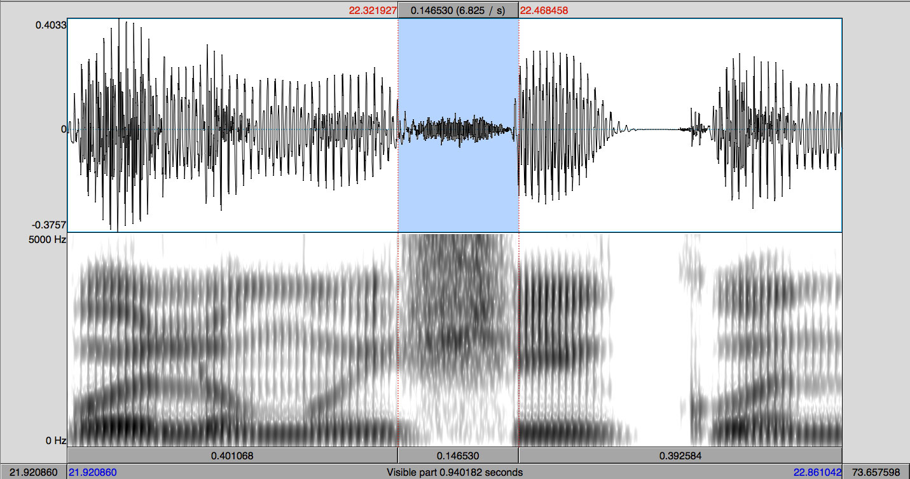

Fonética y español oral
Las oclusivas sordas y las africadas
Joseph V. Casillas
Instituto Franklin: otoño 2015
Las oclusivas sordas
Los fonemas oclusivos sordos

/p, t, k/
- /p/: oclusivo, bilabial, sordo
- /t/: oclusivo, dental, sordo
- /k/: oclusivo, velar, sordo
Los fonemas oclusivos sordos
- Representan tres fonemas distintos
- ¿Cómo lo sabemos? Podemos formar pares mínimos
| Principio de palabra | Interior de palabra | |||
|---|---|---|---|---|
| pasa | /ˈpa.sa/ | sepa | /ˈse.pa/ | |
| taza | /ˈta.sa/ | zeta | /ˈse.ta/ | |
| casa | /ˈka.sa/ | seca | /ˈse.ka/ |
Los fonemas oclusivos sordos
- Cada fonema cuenta con un alófono

Los fonemas oclusivos sordos

¿Qué dificultades puede tener el hablante de inglés?
¿Qué tiene que hacer para no tener un acento extranjero en español?
- En inglés los oclusivos sordos se aspiran
- Tiene que aprender a evitar la aspiracion
- La /t/ es un sonido alveolar en inglés, mientras que es
dental en español- Tiene que aprender a realizar un sonido que existe fonémicamente en su L1 de una manera distinta, eso es con un punto de articulación dental
Los fonemas oclusivos sordos
Ortografía
| Fonema | Grafemas | Ejemplos |
|---|---|---|
| /p/ | 'p' | 'Paco' |
| /t/ | 't' | 'taco' |
| /k/ | 'c' (-a, -o, -u) | 'casa', 'cosa', 'cupo' |
| 'qu' (-e, -i) | 'que', 'quiso' | |
| 'k' | 'kilo' | |
| 'x' | 'examen' |
Los fonemas oclusivos sordos
Contexto fónico
- Posición inicial de sílaba
- 'paco' → [ˈpa.ko], 'mapa' → [ˈma.pa]
- 'taco' → [ˈta.ko], 'pata' → [ˈpa.ta]
- 'caco' → [ˈka.ko], 'poca' → [ˈpo.ka]
- Posición final de sílaba (coda) (comunmente eledidas)
- 'apto' → [ap.to]
- 'atlas' → [at.las]
- 'examen' → [ek.ˈsa.men] o [e.ˈsa.men]
- No aparecen (con mucha frecuencia) en posicón final de palabra (comunmente eledidas)
- 'kétchup', 'argot', 'bistec'
Enemigo #2
Ejercicios


Las africadas
El fonema africado
/ʧ/
- Este fonema tiene un solo alofono: /ʧ/ → [ʧ]
- Aunque hay variacion dialectal
- Ej. "corchetes" --> [koɾ.ˈʧe.tes]
El fonema africado
[ʧ] vs. [ʃ]
 

El fonema africado
/ʧ/
- ¿Qué dificultades tendría el hablante del inglés?
A practicar
Del examen...
- Voy a ir a la tienda hindú del barrio italiano a comprar un vestido.
- A Juana la eligieron reina del concurso de belleza internacional.
- Juan Andrés es dueño de una huerta grande en la ciudad de Medellín.
- Raquel estuvo esperando todo el día en frente del mismo banco.
- Al oír esos gritos uno se da cuenta de que el corazón de toda la hinchada ha entrado en el juego.
Del examen...
- Voyairalatiendahindúdelbarrioitalianoacomprarunvestido.
- AJuanalaeligieronreinadelconcursodebellezainternacional.
- JuanAndrésesdueñodeunahuertagrandeenlaciudaddeMedellín.
- Raquelestuvoesperandotodoeldíaenfrentedelmismobanco.
- Aloíresosgritosunosedacuentadequeelcorazóndetodalahinchadahaentradoeneljuego.
Del examen...
- Vo.ya.i.ra.la.tien.dahin.dú.del.ba.rrioi.ta.lia.no.a.com.pra.run.ves.ti.do
- A.Jua.na.la.e.li.gie.ron.rei.na.del.con.cur.so.de.be.lle.zain.ter.na.cio.nal
- Jua.nAn.dré.ses.due.ño.deu.na.huer.ta.gran.de.en.la.ciu.da.dde.Me.de.llín
- Ra.que.les.tu.vo.es.pe.ran.do.to.do.el.dí.a.en.fren.te.del.mis.mo.ban.co
- A.lo.í.re.sos.gri.to.su.no.se.da.cuen.ta.de.que.el.co.ra.zón.de.to.da.lahin.cha.
da.ha.en.tra.do.e.nel.jue.go
Del examen...
- /ˈbo.ʝa.ˈi.ɾa.la.ˈti̯en.dai̯n.ˈdu.del.ba.ri̯oi̯.ta.ˈli̯a.no.a.kom.ˈpɾa.ɾun.bes.ˈti.do/
/ˈboi̯.a.ˈi.ɾa/ - /a.ˈxu̯a.na.la.e.li.ˈxi̯e.ɾon.ˈrei̯.na.del.kon.ˈkuɾ.so.de.be.ˈʝe.θai̯n.teɾ.na.θi̯o.ˈnal/
- /ˈxu̯a.nan.ˈdɾe.ses.ˈdu̯e.ɲo.deu̯.na.ˈweɾ.ta.ˈgɾan.deːn.la.θi̯u.ˈda.de.me.de.ˈʝin/
- /ra.ˈke.les.ˈtu.bo.es.pe.ˈɾan.do.to.do.el.ˈdi.a.en.ˈfɾen.te.del.ˈmis.mo.ˈban.ko/
- /a.lo.ˈi.ɾe.sos.ˈgɾi.to.su.no.se.da.ˈku̯en.ta.de.keːl.ko.ɾa.ˈθon.de.to.da.lai̯n.ˈʧa.
daː.en.tɾa.do.e.nel.xu̯e.go/
Más práctica
Trascripción fonémica
- No me digas ahora eso porque no lo entiendo
- Los dos hermanos salieron a pasear al parque
- Cuando Inés vino a cenar, le regalé dos flores
- La pared azul antes era blanca
- No te pongas esos pantalones porque están húmedos
- Justino, Antonio y Juan no son mis novios
- No voy al concierto contigo
- Los triptongos me asustan mucho de vez en cuando
- No contestes el teléfono si es para mí
- Al final sí encontré lo que me dijiste
- La cámara de gas no fue un buen invento de la humanidad
Trascripción fonémica
- Nomedigasahoraesoporquenoloentiendo
- Losdoshermanossalieronapasearalparque
- CuandoInésvinoacenar leregalédosflores
- Laparedazulanteserablanca
- Notepongasesospantalonesporqueestánhúmedos
- Justino, AntonioyJuannosonmisnovios
- Novoyalconciertocontigo
- Lostriptongosmeasustanmuchodevezencuando
- Nocontesteselteléfonosiesparamí
- Alfinalsíencontréloquemedijiste
- Lacámaradegasnofueunbueninventodelahumanidad
Trascripción fonémica
- /no.me.ˈdi.ga.sa.ˈo.ɾa.e.so.poɾ.ke.no.lo.en.ˈti̯en.do/
- /los.do.seɾ.ˈma.no.sa.li̯e.ˈɾo.na.pa.se.ˈa.ɾal.ˈpaɾ.ke/
- /ku̯an.doi̯.ˈnes.ˈbi.no.a.θe.ˈnaɾ.le.re.ga.ˈle.dos.ˈflo.ɾes/
- /la.pa.ˈɾe.da.ˈθu.lan.te.ˈse.ɾa.ˈblan.ka/
- /no.te.ˈpon.ga.se.sos.pan.ta.ˈlo.nes.poɾ.ke:s.ˈta.ˈnu.me.dos/
- /xus.ˈti.no.an.ˈto.ni̯oi̯.ˈxu̯a.no.son.mis.ˈno.bi̯os/
- /no.boi̯.al.kon.ˈθi̯eɾ.to.kon.ˈti.go/
- /los.tɾip.ˈton.gos.me.a.ˈsus.tan.ˈmu.ʧo.de.be.θen.ku̯an.do/
- /no.kon.ˈtes.te.sel.te.ˈle.fo.no.si̯es.pa.ɾa.mi/
- /al.fi.nal.si // en.kon.ˈtɾe.lo.ke.me.di.ˈxis.te/
- /la.ˈka.ma.ɾa.de.gas.no.fu̯eu̯n.bu̯e.nin.ˈben.to.de.lau̯.ma.ni.ˈdad/